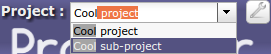
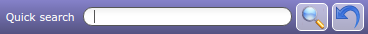
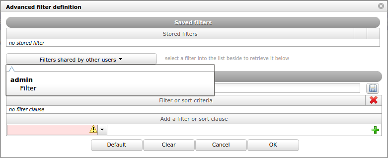
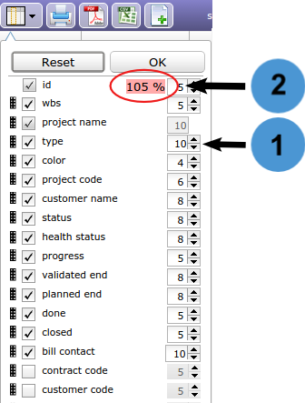
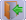
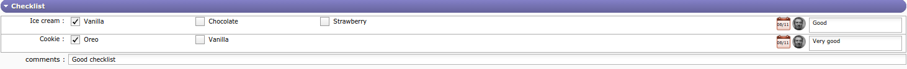

Graphical User Interface¶
ProjeQtOr interface is divided into several areas.
Overview graphical user interface screen
Interface areas:


Area separation
The splitters allow resizing areas in the interface.
The green splitter allows to resize the areas Menu and Documents window and Message and Link window.
The pink splitter allows to resize the areas left and right.
The orange splitter allows to resize the areas List window and Detail window.
The allows to hide the Menu and Documents window and Message and Link window
{kind=link}
Note
The position of splitters is saved and retrieved on each connection.
Top bar¶
 Project selector
Project selector
Allows to select the project to work on.
Limited visibility of all elements of the selected project, including sub-projects if applicable.
Definition of the “default” project for new elements.
Note
User parameter
default project Defines the project that will be selected and display by default into the project selector
You can choose to display multiple projects by checking the corresponding boxes.
Project selector parameters
Click on  to display the project selector parameters dialog box, you can select :
to display the project selector parameters dialog box, you can select :
- View closed projects and handled projects.
- Change the project list display mode.
- Refresh the list.
Show or hide
Choose which types of projects to display from the project selector list.
show closed items
This option allows you to enter the archive mode of the project selector.
Closed projects will then appear in the selector list.
For them to appear in the list box you must activate the check box “closed” in this same area.
Display the handled projects
This option allows to display only in the list of the project selector, the projects with the macro state handled.
Display mode
Project list display mode
Standard reflecting WBS structure
- List of project and sub-project are displayed according to WBS structure.
Project list display mode standard
Filtering select with autocomplete
- List of project and sub-project are displayed according to entered text.
- Search criteria works in a “starts with” mode
- Autocompletion is active
Filtering select with autocomplete
Filtering select with search
- List of project and sub-project are displayed according to search criteria.
- Search criteria works in a “contains” mode
- Autocompletion is not active
Filtering select with search
Selector of the current item
- Button
 to select current project in the project selector.
to select current project in the project selector. - Click once, from any element to display in the selector the project linked to the element.
- Double click to display all projects again
Project selector search
Click on  to search projects and subprojects from any screen with the same search functions as on the projects screen
to search projects and subprojects from any screen with the same search functions as on the projects screen
Project selector search window
{kind=link}
Menu on top bar allows a rapid access to elements. The screen icon you are on will be highlighted

{kind=link}
{kind=link}
Note
Predefined menus
Predefined menus are available and regroup buttons according to the work context.
Custom menu
A user can define its custom menu in the top bar.
Move cursor over the menu selector and click on “Custom menu” to select it.
Added an item
Remove an item
- Move the cursor over icon (icon with star).
- Click on the right button, a message appear.
- Click on the left button and the icon will be removed from the custom menu.
{kind=link}
custom menu creation
 Navigation buttons
Navigation buttons
The navigation buttons 
 give access to previous and next pages in the history.
give access to previous and next pages in the history.
 Button New tab
Button New tab
Allows to open a new tab within the same session.
Logo area¶
Information about the software
When the left menu is open. The ProjeQtOr logo is displayed
Click on it to get the ProjeQtOr configuration information
Logo area
Click on Logo Area will display the software information box
You can view this information with the login window and click About ProjeQtOr...
See: info-bar
Note
You can change logo with your own.
Refer to administration guide to replace the logo.
Menu and Documents windows¶
Menu and Documents windows
Tip
Toggling between windows
To toggling between windows, just click on window header.
Menu window
The menu is proposed as a tree view of reachable items.
The items presented will depend on the access rights of user to the screens.
Click on a grouping line will expand-shrink the group.
Click on an item will display the corresponding screen in the main area (right side of the screen).
Note
User parameter “Icon size in menu”
This parameter defines the size of icons in the menu.
Document directories give direct access to documents contained in the directory.
Document directories
This icon  gives direct access to the Document directories screen.
gives direct access to the Document directories screen.
shortcuts and Console messages¶
External shortcuts and Console messages windows
Note
Toggling between windows
To toggling between windows, just click on window header.
External shortcuts window
Display hyperlinks to remote web pages.
These links are defined as hyperlink attachments on projects.
Links displayed here depend on the selected project.
Displays information about main actions: insert, update, delete.
The timestamp indicates when the action was done.
Warning
Messages displayed here are not stored and will be flushed when user logout.
Keyboard Shortcut¶
[CTRL]+S Save the current element
[CTRL]+clic Open the selected item in a new tab
[F1] Opens the online manual (contextual opening on the current screen)
[ESC] to exit full screen mode
Click on ( into the logo zone ) or use shortcut key F1 shortcut key to open the English ProjeQtOr manual.
List window¶
Interface areas:
Element identifier
Displays the element name and the count of items in the list.
Each element is identified with a distinctive icon.
Rapid filtering fields are proposed : “Id”, “Name” and “Type”.
Any change on “Id” and “Name” Will instantly filter data.
Search is considered as contains.
Typing 1 in ID will select 1, 10, 11, 21, 31 and so on.
Selecting a Type
Will restrict the list to the corresponding type.
Other filter fields
Depending on the element, other filter fields will be available.
Reset
Click on the clear button to reset the filter list.
Status list
Click on to diplays status list.
Only existing status are visible if their are used.
Choice one of them and the item list will be filter.
This is a quick filter list by status.
Note
Actives this filter in global parameters otherwise this button is hidden.
Buttons
Definition of buttons
Each button is listed below
Click on the icon to execute a textual search.
The quick search allows to execute a textual search.

- Click on
- Click on
to close the quick search.
- Accents are not taken into account
Advanced filters
Click on the icon to define an advanced filter.
The advanced filter allows to define clause to filter and sort.
The advanced filter definition dialog box is divided into two sections.
Advanced filter definition
This section allows to define the filter and sort clauses.
Add criteria
- Define the clauses of filter or sort in “Add a filter or sort clause”.
- Select the name of the field, the operator and the value to the clause.
- Click on
to add additional criteria.
- Click on OK button to apply the filter.
- Click on Cancel button to revert to previous filter.
- Click on
- Possibility to select the logical operator OR between the criteria of a filter instead of AND.
Note
A or B and C is equivalent to A or(B(+)C) Applies logical operator with preceeding criteria (by default AND). Be careful, operator AND is applies before OR.
- Operator “starts with” to select sort clauses without displaying this list.
Dynamic filters
- The value of the critera is entered when the filter is activated.
- So Click on Dynamic value creating this filter.
- Dynamics filters are available for all users in them session.
Remove criteria
- To remove a criteria, click on
on the line.
- To remove all criteria, click on
- Click on the Clear button to reset the active filter.
Save active filter
- Active filter can be saved to reuse.
- Fill the filter name and click on
to save the filter definition.
This section allows to manage saved filters.
- Click on a saved filter to retrieve its definition.
- Click on
- Click on the Default button to define the active stored filter as the default, kept even after disconnection.
- Click on
to reorganize the filters.
Note
Default filter
- The default filter is defined for the user.
- The filter will be automatically applied in the next connection.
Shared filters
- Defined filters can be shared with other users.
- Click on
to share the selected filter.
- Click on
to unshare the selected filter.
Shared filters are available for all users in them session.
Dialog box - Advanced filter definition with shared filter
List of filters
- The filter list allows to select a stored filter.
- To see the filter list, move the cursor over the advanced filter icon.
- Click on the filter name to apply.
- Click on no filter clause to reset the filter.
Displayed columns
This functionality allows to define columns displayed in the list for this element.
Note
- The columns display is defined for the user.
- The definition will be automatically applied in the next connection.
Select columns to display
- Click on OK button to apply changes.
- Click on Reset button to reset the list to its default format.
Column selection
Use checkboxes to select or unselect columns to display.
Note
Id and name are mandatory fields. They cannot be removed from display.
Columns order
Use the selector area
to reorder fields with drag & drop feature.
Column size
Use the spinner button
to change the width of the field.
Width is in % of the total list width.
The minimum width is 1%.
The maximum width is 50%.
Note
Field Name
- The width of the field is automatically adjusted so that the total list width is 100%.
- The width of the field cannot be less than 10%.
Warning
Total width over 100%
- The total width must be limited to a maximum 100%.
- The exceedance will be highlighted beside the buttons.
- This may lead to strange display, over page width, on list, reports and PDF export, depending on the browser.
Print the list
Click on the icon to get a printable version of the list
Export to PDF format
Allows to export data of list to PDF format.
Export contains all details and links between tasks.

Export planning to PDF
Export can be done horizontally (landscape) or vertically (portrait) in A4 and / or A3 format with high quality of details
Export to CSV format
This functionality allows to export data of list in a CSV file.
The fields are regrouped and presented in the order as they appear in the item description.
- Click on OK button to export data.
- Click on Cancel button to close the dialog box.
Note
The active filter defined will be applied to export data.
The CSV exported files can directly be imported through the import functionality.
See: Import data
The export definition is defined for each user.
The same definition can be applied in the next export.

Fields selection
- Use the checkbox to select or unselect all fields.
- Click on Select list columns button to restrict selected fields to the ones that are currently displayed in the list.
Id or name for references
- For fields that reference another item, you can select to export either the id or the clear name for the referenced item.
Preserve html format for long texts
- Box checked indicating that HTML tags in a long text field will be kept during export.
Create new item
Click on the icon to create a new item of the element.
the element created will correspond to the screen on which you are.
If you are on the project screen, a new project will be created.
If you are on the activity screen, then the new item will be an activity.
to refresh the list
Click on the icon to refresh the list of the screen.
Checkbox Show closed items
Flag on Show closed items allows to list also closed items
 Column headers
Column headers
Click a column header to sort the list on that column (first ascending, then descending).
Sorting is not always on the name displayed
If the sorted column is linked to a reference list with sort order value, the sorting is executed on this sort value.
Sorting on the “Status” allows to sort values such as defined in the workflow.
{kind=link}
Click on a line (any column) will display the corresponding item in the detail window.
Details window¶
Interface areas:
Item identifier
Identifies the item with the element type and the item id and name.
Each element is identified with a distinctive icon.
Element Information
The red calendar shows the date of update. The gray calendar indicates the creation date of the element and the thumbnail corresponds to the creator of the element
See: Thumbnails
Note
Administrator can change information.
Buttons
Details windows buttons
Note
Some buttons are not clickable when changes are ongoing.
Warning
When changes are ongoing, you cannot select another item or another menu item.
Save or cancel ongoing changes first.
Create a new item
Depending on the screen of the selected item, create a new item in that category
Save the changes of the current item.
Or use shortcut key
ctrl-sto save the changes on the current item.
To obtain a printable version of the details of the current element.
To get a printable version of the details in PDF format.
Copy item
Allows you to copy an entire element or to select only some information such as project structure, meetings, links or attached files.
The new item has the status copied.
Copy element
The options displayed in dialog box depends on whether the element is simple or complex.
Simple element
Simple element (environment parameters, lists,…) can only be copied “as is”.
Complex element
Complex element (Tickets, Activities, …), it is possible to copy them into a new kind of elements.
For instance, it is possible to copy a Ticket (the request) into an Activity (the task to manage the request) or meeting, periodics meetings as well as test sessions.
It is possible to select:
- New kind of element.
- Select new type (corresponding to the kind of element).
- Change the name.
- Change the project.
- Select whether the initial element will be indicated as the origin of the copied one.
For main items, it is also possible to choose to copy links, attachments and notes.
For Projects and Activities, it is also possible to copy the hierarchic structure of activities (sub-projects, sub-activities).
The button is clickable only when changes are ongoing.
Allows you to undo changes made to the current element
Allows you to refresh the details windows of the selected element
Email detail
Allows to send an informative email to defined recipients list.
Email details dialog box
The list is defined according to the role of the recipient.
See: ProjeQtOr roles
Flag on the role checkbox to define the recipients list.
Checkbox other
Flag on the checkbox other to manually enter email addresses.
When sending an email, the address (es) entered in “other” remains in memory and will be proposed during the next mailing
Use commas or semicolons to separate addresses.
Message
The message that will be included in the body of the email, in addition to a complete description of the item.
Save as note
Flag on to indicate the email message will be saved as a note.
Email Template
You can choose an email template even without having predefined it in the settings.
To create and view templates. See Email Templates.
Files to attach to email
Attachments for the item appear in the attachment table. If the item has no files attached then the table is not visible.
The maximum size of attached files must be entered in the global parameters in the Mailing tab. The size indicated is in bytes unless you indicate otherwise. see: Global parameters
When you check a file to send the size of the latter is displayed at the top right of the table.
- If several files are selected, then the total size of these files is calculated and displayed.
- If the total size
Subscribe detail
Allows to subscribe to tracking of an item.
This icon is checked when you subscribed .
Subscribe detail
When a user “subscribes” to the project, he will receive notifications “to subscribers” for all elements of the project
Ability to subscribe a third party user to the tracking of an element (according to configurable rights).
You can drag the name of selected ressources and drop them on the right column for subscribe them.
Suscribe for other
Display of list of tracked items
You can view the list of tracked items in two ways:
- click on the button “View the list of subscriptions” in the subscription menu
- In the user settings of the Miscellaneous section, click on the “Show subscription list” button.
Display list of tracked items
Note
Possibility to send an email to users following the item
when unitary sending detail or on automatic sending or on indicator.
contacts
You can see the items followed by your contacts
see: Contacts
Multiple update
Allows to update several items in one operation.
The fields that can be updated depends on the element.
The fields are grouped by section.
Click on  to quit the multiple mode window.
Select items
- Selection of items can be done by selecting one or more items in the list window.
- Click to select the item, click again to deselect
- Or use checkboxes to select/unselect all items in the list.
- The count of items selected is displayed.
Multiple mode item selection
Apply updates
- Click on
- Click on
- The update will be applied to all the items (if possible) and a report will be displayed on the right.
Note
Target milestones can be modified with “multiple update” tickets and activity screens
You can bulk close items that do not have status (assigned, closed, recorded ...) as resources
multiple update on resource
History of changes
All the changes items are tracked.
They are stored and displayed on each item.
On creation, just an insert operation is stored, not all the initial values on creation.
Fields of changes¶ Field Description Operation The operation on the item (insert or update). Data The field modified. Value before The value of the field before the update. Value after The value of the field after the update. Date Date of change operation. User Name of the user who operated the change. Displaying the history of changes
- The user parameter “Display history” allows to define whether the history of changes appears in a section or in a dialog box.
- If the value “On request” is set, the button appears on the detail header window.
- Click on to display the history of changes.
- If the value “Yes” is set, the “Change history” section appears in the detail window.

Dialog box - History of changes

Section - Change history
Show/Hide work
- This button allows to show or hide work changes done in “Real Work Allocation”.
- For section “Change history” the display of work is defined in user parameter “Display history”.
Show / hide the checklist
This button is only displayed if the “display checklist” parameter in the user settings is set to “on request” status
Drop file area
This area allows to add an attachment file to the item.
- Drop the file in the area.
- Or click on the area to select a file.
Text editor
Text editors are available for editing of long text fields like description, results, notes, ...
Selection of text editor can be done in User and Global parameters screens.
CK Editor
The most advanced web editor.
Spell checker available with this text editor.
CK Editor - Ability to resize the CK Editor height, the size is saved
Possibility to deactivate the SCAYT spell checker. It can be modified by each user in user parameters.
CK editor inline
As CK Editor.
Activated only when needed.
Note
- CK editor inline height, keep the size of CK editor.
- Click on the text zone to display toolbar.
- Can not use it in fullscreen mode.
Dojo Editor

Dojo Editor
Historically first used on ProjeQtOr.
Inline editor
- As Dojo Editor.
- Activated only when needed.
- Text zone is extendable.

Inline editor
Plain text editor
- Conventional text input.
- Text zone is extendable.

Plain text editor
- The fields are regrouped under a section.
- All sections can be folded or unfolded, clicking on the section title.
Columns
The sections are organized in columns.
Number of displayed columns can be defined in user parameters.
Common sections
Some sections are displayed on almost all screens. (See : Common sections)
Item count in the list
When the section contains a list, the item count is displayed at right of the header.

Header section
Thumbnails on items in the list
Thumbnails are displayed on item row to present field values in graphical format.
See: Thumbnails.
Go to selected item
In a list, possibility to go directly to an item by clicking on its fields.
Cursor change to
on clickable fields.
 Checklist
Checklist
Allows to fill a checklist form.
A checklist is available, whether a checklist form is already defined for the element or the element type.
The checklist forms are defined in Checklists screen.
The access to view the checklist depends on your access rights.
Displaying the checklist
The user parameter “Display checklists” allows to define whether the checklist appears in a section or in a dialog box.
If the value “On request” is set, the button
Click on
With other value the “Checklist” section appears in the detail window.

Dialog box - Checklist
Section - Checklist
How to use
The user just has to check information corresponding to the situation.
When done, the user name and checked date are recorded and displayed.
Each line can get an extra comment, as well as globally on the checklist.
Info bar¶
Interface areas:
{kind=link}
{kind=link}
{kind=link}
{kind=link}
{kind=link}
Info bar
Version button
Displays the version of ProjeQtOr installed
Click on the button to access the site of ProjeQtOr.org

Infos Area
login window with many setup shortcuts.
Allows to disconnect the user.
Note
User parameter “Confirm quit application”
This parameter defines whether a disconnection confirmation will be displayed before.
See: Tab Display
ProjeQtOr is multilingual. We offer 19 languages (one being translated: Polish)
Each user can choose the language to display all the captions.
Note
User parameter “Language”
This parameter defines the language used to display captions.
see: Tab Display
Themes
Users can select Theme to display the interface.
By default your selected theme is “ProjeQtOr ‘Flat Desgin’ Blue”.
Many themes are available

ProjeQtOr’s Themes
Note
User parameter “Theme”
- This parameter defines the theme to display.
- The new theme is automatically applied when selected.
- see: Tab Display
Screenshoots has been taken with “ProjeQtOr Standard” theme.
It is possible to choose the screen that will be displayed first.
Choose your default screen
Scroll down the drop-down list to choose the screen you will see first
At the next login, this screen will be displayed
Click on “Keyboard shortcuts” to get the list of functional shortcuts in ProjeQtOr. The link redirects you to the manual
Control-sto save the changes.
F1to open the online user manual, to the page corresponding to the actual screen.
ESCto exit full screen mode of CK Editor.Numeric keypad
The point will be replaced by a comma if the numeric format requires it.
Switched mode button
Allows to enable or disable switched mode that allows to switch between list and detail windows.
Window selected is displayed in “full screen” mode.
Hidden window are replaced by a gray bar.
Click on the gray bar to switch between windows.
Note
User parameter Switched mode
This parameter defines whether switching mode is enabled or not.
Full-screen button
One-click to displays in full Screen view.
Hide and show menu button
Allows to hide or show the menu section.
Note
User parameter “Hide menu”
This parameter defines whether the menu is hidden by default.
Message pop-up
Users may receive messages pop-up, displayed on the bottom right corner of the screen.
Three kinds of message may be displayed:
- Information
- Warning
- Alert

Action on message pop-up
Three possible actions:
- Select to remind you in a given number of minutes (message will close and appear again in the given number of minutes).
- Mark it as read to definitively hide it.
- Mark as read all remaining alerts (the number appears on the button).
Note
On Alerts screen, the user can read the alert messages marked as read.
Alert on detail window
On indicatorable items, you may see a small icon on top left of the detail of the item.
Just move the mouse over the icon to display, which indicator has been raised.
Alert on detail window
Alert on Today screen
Just move the mouse over the red line to display, which indicator has been raised.

Alert on Today screen
Special fields¶
This section describes the ProjeQtOr special fields.
Accelerator buttons¶
Move to next status button
This button allows to skip to the next status without having to open the list.
The next status is defined by the workflow linked to the type of element.
The mouse tracking over this colored button allows to show the workflow.

Move to next status
Assign to me button
This button allows to set the current user in the related field.

Combo list field¶
Combo list field allows to search, view or create item associated with the field.
Note
The access to view or create item depends on your access rights.
Some buttons can be not available.

Click on to get the list of values.
Click on  will directly go to the selected item.
will directly go to the selected item.
Click on to access item details.
The next action depends on whether the field value is filled or not.
Field value is filled
If the field value is filled, the details of item associated are displayed.
Dialog box - Item details
Click on
Click on
Field value is empty
If the field value is empty, the list of items is displayed, allowing to select an item.

Dialog box - List of items
Click on
to select items.
Click on to create a new item.
Click on
Note
Window header
You have access to Rapid filter, Quick search and Advanced filter.
Select several items
Some elements is possible to select several items, use
ControlorShift.
Origin field¶
- This field allows to determine the element of origin.
- The origin is used to keep track of events (ex.: order from quote, action from meeting).
- The origin may be selected manually or automatically inserted during copying an element.
Origin element
- Click on to add a orgin element.
- Click on to delete the link.
| Field | Description |
|---|---|
| Type of the orign | Type of element to be selected. |
| Origin element | item to select. |
Set color field¶
- This field allows to set the color of an item.
- Used to differentiate items in list or report.
- Click on list of colors to select.
- Click on “Reset” button to erase.

Thumbnails¶
Thumbnails are a graphical representation of the field value.
Date
- Displays the date of creation or update of the item.
- Move cursor over thumbnail to display the date.
The Item have been created or updated today.
The Item have been created or updated recently.
Default view.
User
- Portrait of the user. Displays if it has created or updated an item.
- If no photo is saved, an icon will automatically be generated.
- The letter is chosen according to the real name. This is his initial.
- Move the cursor over the thumbnail to display the user’s name and photo in its original size.
The user doesn’t have a photo.
Comment
 Indicates a comment or description is defined.
Indicates a comment or description is defined.- Move cursor over thumbnail to display text.
Privacy
Indicates the visibility level defined in a note or attachment.
Private contents.
Visible to team.
Color
- Displays a colored circle for field colorable.
- Some list of values has a field to define a color.
- A color is defined for each value.